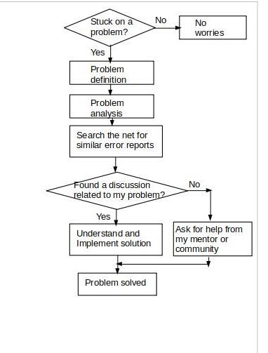

Back again!
It’s been almost 3 weeks now and so far working with the Yocto community especially my mentor Ross Burton has been wonderful. I finally feel like I belong somewhere, the community is so welcoming, appreciates openness, and ready to offer assistance to anyone stuck on a problem which I must say plays an important role in the growth of a good developer. The folks here are honestly curious and willing to share bugs and fixes.
Starting out as a new programmer, I felt intimidated asking for help, back then I would be stuck on a problem for days, only for me to eventually seek help from related communities, and just by doing that most times I get a little bit of clarity or the help I needed. This is termed rubber duck programming which I recently just learned from my mentor Ross who is very resourceful and more of a morale booster.
However as I learn and develop my skills, two of my major core values “determination and learning” have really helped me in overcoming some of the struggles I face as a software developer. And as simple as this may look, this is my development cycle for overcoming programming struggles; I mean this is literally everything.
It’s alright to make mistakes, as far as you learn from it!
Let me share one of my funny experience in contributing to FOSS.
Like I said earlier in my previous blog post, this Outreachy internship was an eyeopener to FOSS for me. Open source contribution and navigating git was a new terrain to me. So Once upon a time, one faithful afternoon, I had committed some changes on my local git branch ready to be pushed to a repository forked from the Ceph project I was contributing to. So immediately I pushed the local branch I got a response prompt from Git saying;
”your local branch is behind remote branch by xx commit, use git pull to update your branch”the novice guy in me said;
“ah no need to check what git pull does, just do what the prompt says”and I ran the command
“git pull”, ah mogbe!(I am finished) that was when my problem started lol. For those who may not understand what I did wrong; I had pulled the committed changes made by everyone contributing to the Ceph project into my local branch, then I went ahead to push the changes to my remote branch. I had not noticed this problem until about 18 hours later when I started getting git emails from the Ceph project contributors. I went to check the commit I made and was blasted with tons of messages from the contributors, although they were not harsh messages but I could tell what I did was very wrong, at that moment I began to panic, so I reached out to one of the Ceph contributors who told me to rebase, still in panic I frantically searched the net on how to do a git rebase but couldn’t figure it out, it was until I calmed down that I could now think straight, and in less than 2 minutes I was able to rebase properly. After that incident I made sure to thoroughly learn git commands. Lol.
Having been in this kind of situation I must say that patience is a virtue.